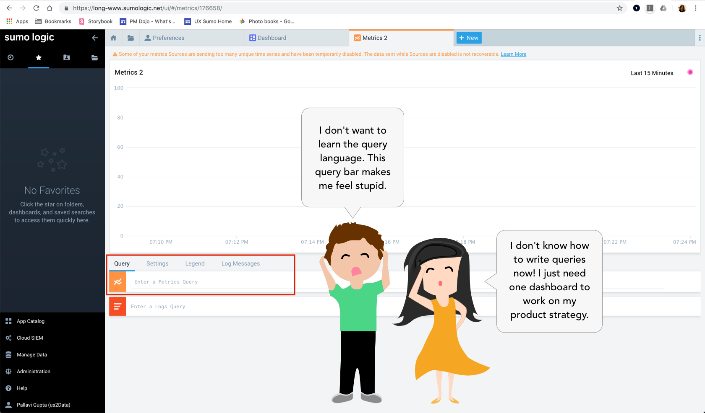
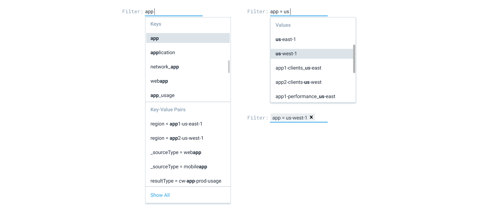
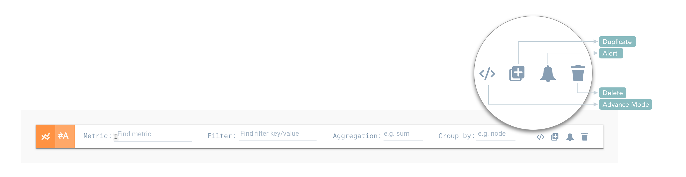
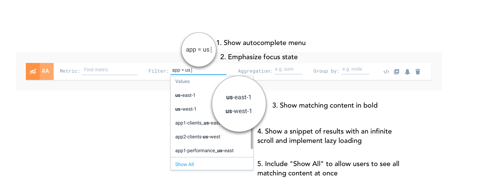
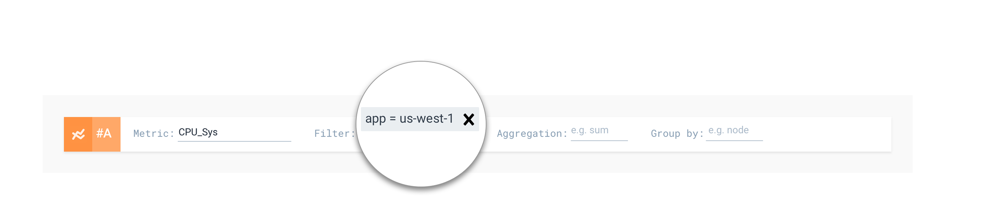
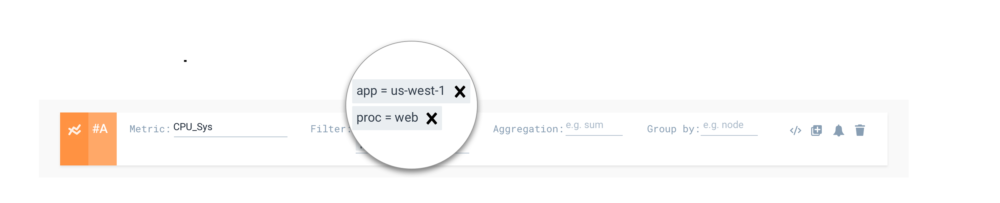
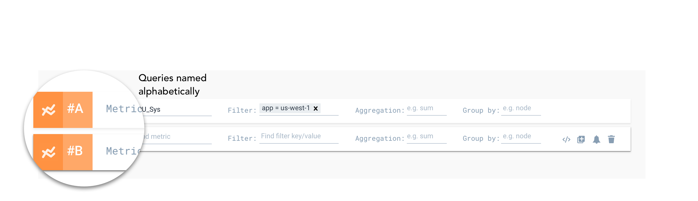
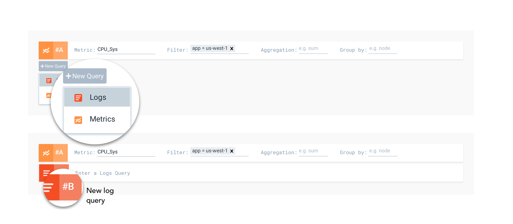
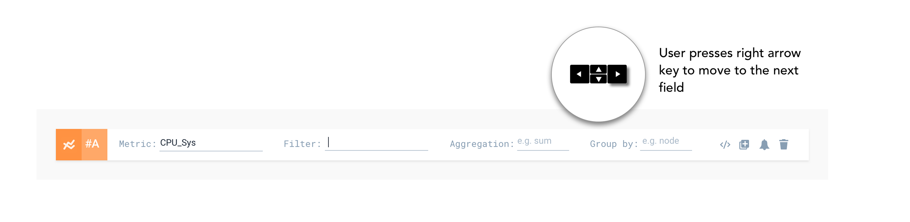

Structured analytics query builder helping teams query and visualize complex data sets efficiently
Sumo Logic is a cloud-native real-time machine data analytics platform that empowers teams to make data-driven decisions.
Let’s break it down further. Assume that you work at a large airline company and encounter co-workers named Andre and Kathy. Both of them use Sumo Logic but they have different usecases in mind.
Andre is a Software Engineer on the Infrastructure Team and his role is to make sure that the systems are up and running as soon as possible whenever the airline's check-in infrastructure goes down. He uses Sumo to monitor the health of the server infrastructure, to get notified of system failures, and to troublshoot the root cause of problems and fix them quickly.
Kathy is the Head of Business Operations and is responsible for expanding operations in certain regions of the world by analyzing airline's passenger traffic and travel patterns. She uses Sumo to create dashboards that give her rich insights about her team's target for the quarter, understand popular routes and trends, build strategy and product roadmaps along with key stakeholders and business partners.
While both Andre and Kathy use Sumo's tools for their work, they are frustrated.
Our research showed that users were lost trying to figure out how to write queries effectively. Novice users, in particular, struggled as it meant learning a new query language. Expert users wanted the ability to group queries and perform powerful tasks at once. Even with abundant learning resources, users spent a long time figuring out how to write proper queries.
As a designer, it was important to understand that the Sumo platform handled both structured and unstructured data which complicated the semantics of the query language making it a hard design problem to solve.
To simplify the query writing process and reduce the amount of time taken by users to write successful queries
Led product design efforts for the Sumo Logic's metrics query and dashboard creation experience through the Double-Diamond process.
Conducted user interviews with a UX researcher, to gather design insights and uncover user needs, pain points and evaluate designs
Scoped the problem at hand keeping project timelines in mind and led an internal ideation workshop with teams from US, Poland and India to understand interaction behaviors and must-have features in a query builder
Delivered design prototypes ans final specs vetted by user testing sessions with external participants
Sumo Logic's New Query Builder solved the challenges linked to query writing by providing a simpler and cleaner structure to writing metrics queries for both novice and expert users, thereby helping them get closer to their solutions
Simplifying Complexity
Sense of Freedom
Interaction Patterns
Real-world edge cases
Error Handling & Accessibility
Ability to toggle between basic and advance modes for query writing catering to novice and expert users. By understanding the semantics of the query language and observing how users grouped data, the simple mode breaks down a query into four broad categories: Metric, Filter, Aggregation, Group By.

Two different menus depending on whether a user is just starting with a key/value pair or picking a value after a key is selected.
Ability to get alerts, delete, and duplicate actions apart from the mode toggle. By setting up alerts, users can auto-run queries and get notified whenever there is an anamoly.
Microinteractions for fast query writing and picking values from an infinite database
 While single filters worked for novice users who were trying to get broader insights, those debugging preferred multiple filters to narrow down issues during the troubleshooting phase.
Andre who was an expert user pointed out nuances and edge-cases that had to be addressed. For instance, Andre often leveraged multiple complex queries to get to the root cause of his bug. He wrote a second query to take in results from the first and feed it to the third.
Infact, expert users used multiple types of queries to pinpoint the source of the problem.
Error handling was another nuance that we had to handle since we were looking at real world use cases. and accessibility were other factors that we looked into at this point.
When it came to accessibility, keyboard shortcuts were a must have since certain users preferred navigating just via keyboards and did not want to use the touchpad or a mouse.
NPS 7, Platform Engineer
NPS 10, Business Administrator
NPS 9, Senior DevOps Engineer
The product was launched in Oct 2019 as a part of the company's Kubernetes initiative at the company user conference.
reduction in query writing time
increase in the number of queries written
number of datapoints per day (11M)
improvement in Net Promoter Score (NPS)
With the help of the new solution, Kathy was able to successfully create dashboards that informed her product strategy using data about trending tourism spots, social media tags and her airline's passenger traffic throughout the year. On the other hand, Andre was able to single-handedly pinpoint what led to the system breakdown and get the systems up and running without having to alert another soul.

On September 17, 2020, Sumo Logic debuted on the NASDAQ stock exchange in its initial public offering as a public company.